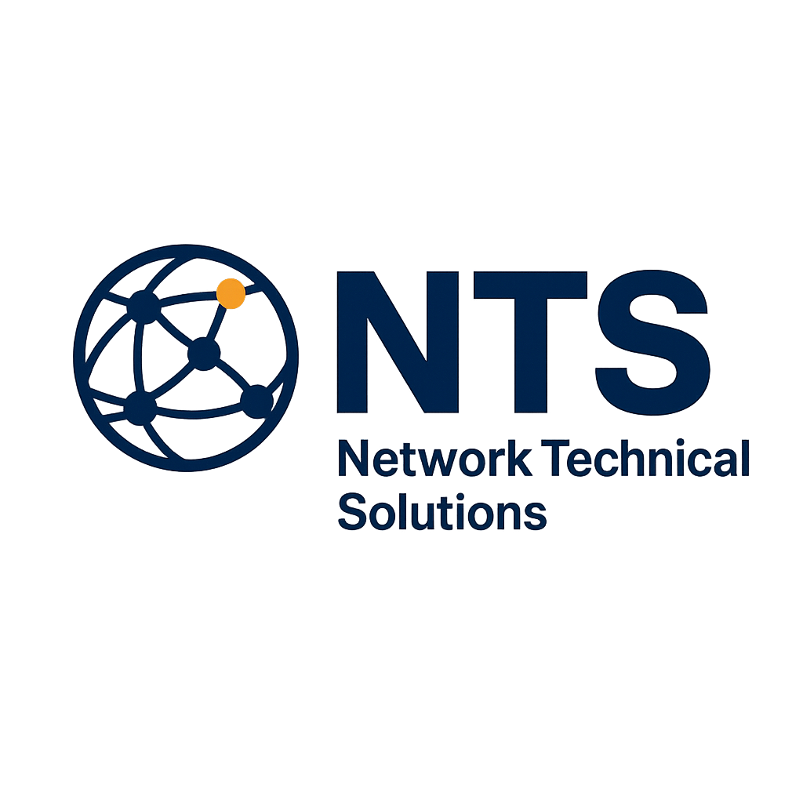

Profesionales a su servicio, con el calor humano que nos distingue
En NTS trabajamos para brindar soluciones técnicas confiables, con un enfoque humano y profesional.
Diseño, instalación y mantenimiento de redes, cableado estructurado y soluciones tecnológicas que soportan la operación de su negocio.
Gestión integral de sistemas, soporte técnico, seguridad, respaldos y acompañamiento continuo para su infraestructura tecnológica.
Soluciones eléctricas, plomería y adecuaciones locativas para el correcto funcionamiento de sus espacios.
NTS – Network Technical Solutions es una empresa orientada a la prestación de servicios tecnológicos y locativos, enfocada en ofrecer soluciones eficientes, seguras y confiables.
Nuestro compromiso es acompañar a nuestros clientes con profesionalismo, responsabilidad y el calor humano que nos distingue.
Trabajamos bajo un enfoque integral, entendiendo las necesidades técnicas y operativas de cada cliente.
Ofrecemos soluciones personalizadas, soporte oportuno y un acompañamiento continuo en cada proyecto.
Brindar soluciones tecnológicas y locativas de alta calidad, garantizando continuidad operativa, seguridad y confianza a nuestros clientes.
Ser una empresa reconocida por su excelencia técnica, confiabilidad y enfoque humano en la prestación de servicios a nivel empresarial.
Profesionalismo, responsabilidad, compromiso, honestidad, calidad en el servicio y cercanía con el cliente.